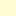

<!doctype html>
<html lang="en">
    <head>
        <meta charset="utf-8">
        <meta http-equiv="X-UA-Compatible" content="IE=edge">
        <meta name="viewport" content="initial-scale=1,user-scalable=no,maximum-scale=1,width=device-width">
        <meta name="mobile-web-app-capable" content="yes">
        <meta name="apple-mobile-web-app-capable" content="yes">
        <link rel="stylesheet" href="css/leaflet.css">
        <link rel="stylesheet" href="css/qgis2web.css"><link rel="stylesheet" href="css/fontawesome-all.min.css">
        <link rel="stylesheet" href="css/leaflet-search.css">
        <link rel="stylesheet" href="css/leaflet-measure.css">
        <style>
        html, body, #map {
            width: 100%;
            height: 100%;
            padding: 0;
            margin: 0;
        }
        </style>
        <title></title>
    </head>
    <body>
        <div id="map">
        </div>
        <script src="js/qgis2web_expressions.js"></script>
        <script src="js/leaflet.js"></script>
        <script src="js/leaflet.rotatedMarker.js"></script>
        <script src="js/leaflet.pattern.js"></script>
        <script src="js/leaflet-hash.js"></script>
        <script src="js/Autolinker.min.js"></script>
        <script src="js/rbush.min.js"></script>
        <script src="js/labelgun.min.js"></script>
        <script src="js/labels.js"></script>
        <script src="js/leaflet-measure.js"></script>
        <script src="js/leaflet-search.js"></script>
        <script src="data/franjalitoral_1.js"></script>
        <script src="data/Aeroports_2.js"></script>
        <script src="data/Topnims_3.js"></script>
        <script src="data/Polgons_4.js"></script>
        <script>
        var map = L.map('map', {
            zoomControl:true, maxZoom:28, minZoom:1
        }).fitBounds([[39.495392870069665,2.4247232195974124],[39.68622149894185,2.7728933545254884]]);
        var hash = new L.Hash(map);
        map.attributionControl.setPrefix('<a href="https://github.com/tomchadwin/qgis2web" target="_blank">qgis2web</a> &middot; <a href="https://leafletjs.com" title="A JS library for interactive maps">Leaflet</a> &middot; <a href="https://qgis.org">QGIS</a>');
        var autolinker = new Autolinker({truncate: {length: 30, location: 'smart'}});
        var measureControl = new L.Control.Measure({
            position: 'topleft',
            primaryLengthUnit: 'meters',
            secondaryLengthUnit: 'kilometers',
            primaryAreaUnit: 'sqmeters',
            secondaryAreaUnit: 'hectares'
        });
        measureControl.addTo(map);
        document.getElementsByClassName('leaflet-control-measure-toggle')[0]
        .innerHTML = '';
        document.getElementsByClassName('leaflet-control-measure-toggle')[0]
        .className += ' fas fa-ruler';
        var bounds_group = new L.featureGroup([]);
        function setBounds() {
        }
        map.createPane('pane_OpenStreetMap_0');
        map.getPane('pane_OpenStreetMap_0').style.zIndex = 400;
        var layer_OpenStreetMap_0 = L.tileLayer('https://tile.openstreetmap.org/{z}/{x}/{y}.png', {
            pane: 'pane_OpenStreetMap_0',
            opacity: 1.0,
            attribution: '',
            minZoom: 1,
            maxZoom: 28,
            minNativeZoom: 0,
            maxNativeZoom: 19
        });
        layer_OpenStreetMap_0;
        map.addLayer(layer_OpenStreetMap_0);
        function pop_franjalitoral_1(feature, layer) {
            var popupContent = '<table>\
                    <tr>\
                        <td colspan="2">' + (feature.properties['INSPIREID'] !== null ? autolinker.link(feature.properties['INSPIREID'].toLocaleString()) : '') + '</td>\
                    </tr>\
                    <tr>\
                        <td colspan="2">' + (feature.properties['NATIONALCO'] !== null ? autolinker.link(feature.properties['NATIONALCO'].toLocaleString()) : '') + '</td>\
                    </tr>\
                    <tr>\
                        <td colspan="2">' + (feature.properties['COUNTRY'] !== null ? autolinker.link(feature.properties['COUNTRY'].toLocaleString()) : '') + '</td>\
                    </tr>\
                    <tr>\
                        <td colspan="2">' + (feature.properties['NATLEV'] !== null ? autolinker.link(feature.properties['NATLEV'].toLocaleString()) : '') + '</td>\
                    </tr>\
                    <tr>\
                        <td colspan="2">' + (feature.properties['NATLEVNAME'] !== null ? autolinker.link(feature.properties['NATLEVNAME'].toLocaleString()) : '') + '</td>\
                    </tr>\
                    <tr>\
                        <td colspan="2">' + (feature.properties['LEGSTATUS'] !== null ? autolinker.link(feature.properties['LEGSTATUS'].toLocaleString()) : '') + '</td>\
                    </tr>\
                    <tr>\
                        <td colspan="2">' + (feature.properties['ACCURACY'] !== null ? autolinker.link(feature.properties['ACCURACY'].toLocaleString()) : '') + '</td>\
                    </tr>\
                    <tr>\
                        <td colspan="2">' + (feature.properties['NAME_BOUND'] !== null ? autolinker.link(feature.properties['NAME_BOUND'].toLocaleString()) : '') + '</td>\
                    </tr>\
                    <tr>\
                        <td colspan="2">' + (feature.properties['DATE_BOUND'] !== null ? autolinker.link(feature.properties['DATE_BOUND'].toLocaleString()) : '') + '</td>\
                    </tr>\
                    <tr>\
                        <td colspan="2">' + (feature.properties['URL_RESOUR'] !== null ? autolinker.link(feature.properties['URL_RESOUR'].toLocaleString()) : '') + '</td>\
                    </tr>\
                </table>';
            layer.bindPopup(popupContent, {maxHeight: 400});
        }

        function style_franjalitoral_1_0() {
            return {
                pane: 'pane_franjalitoral_1',
                opacity: 1,
                color: 'rgba(219,30,42,1.0)',
                dashArray: '',
                lineCap: 'round',
                lineJoin: 'round',
                weight: 3.0,
                fillOpacity: 0,
                interactive: false,
            }
        }
        map.createPane('pane_franjalitoral_1');
        map.getPane('pane_franjalitoral_1').style.zIndex = 401;
        map.getPane('pane_franjalitoral_1').style['mix-blend-mode'] = 'normal';
        var layer_franjalitoral_1 = new L.geoJson(json_franjalitoral_1, {
            attribution: '',
            interactive: false,
            dataVar: 'json_franjalitoral_1',
            layerName: 'layer_franjalitoral_1',
            pane: 'pane_franjalitoral_1',
            onEachFeature: pop_franjalitoral_1,
            style: style_franjalitoral_1_0,
        });
        bounds_group.addLayer(layer_franjalitoral_1);
        map.addLayer(layer_franjalitoral_1);
        function pop_Aeroports_2(feature, layer) {
            var popupContent = '<table>\
                    <tr>\
                        <td colspan="2">' + (feature.properties['Nom'] !== null ? autolinker.link(feature.properties['Nom'].toLocaleString()) : '') + '</td>\
                    </tr>\
                </table>';
            layer.bindPopup(popupContent, {maxHeight: 400});
        }

        function style_Aeroports_2_0() {
            return {
                pane: 'pane_Aeroports_2',
        rotationAngle: 0.0,
        rotationOrigin: 'center center',
        icon: L.icon({
            iconUrl: 'markers/plane.svg',
            iconSize: [44.07999999999997, 44.07999999999997]
        }),
                interactive: false,
            }
        }
        map.createPane('pane_Aeroports_2');
        map.getPane('pane_Aeroports_2').style.zIndex = 402;
        map.getPane('pane_Aeroports_2').style['mix-blend-mode'] = 'normal';
        var layer_Aeroports_2 = new L.geoJson(json_Aeroports_2, {
            attribution: '',
            interactive: false,
            dataVar: 'json_Aeroports_2',
            layerName: 'layer_Aeroports_2',
            pane: 'pane_Aeroports_2',
            onEachFeature: pop_Aeroports_2,
            pointToLayer: function (feature, latlng) {
                var context = {
                    feature: feature,
                    variables: {}
                };
                return L.marker(latlng, style_Aeroports_2_0(feature));
            },
        });
        bounds_group.addLayer(layer_Aeroports_2);
        map.addLayer(layer_Aeroports_2);
        function pop_Topnims_3(feature, layer) {
            var popupContent = '<table>\
                    <tr>\
                        <td colspan="2">' + (feature.properties['Topònim'] !== null ? autolinker.link(feature.properties['Topònim'].toLocaleString()) : '') + '</td>\
                    </tr>\
                </table>';
            layer.bindPopup(popupContent, {maxHeight: 400});
        }

        function style_Topnims_3_0() {
            return {
                pane: 'pane_Topnims_3',
                radius: 4.0,
                opacity: 1,
                color: 'rgba(35,35,35,1.0)',
                dashArray: '',
                lineCap: 'butt',
                lineJoin: 'miter',
                weight: 1,
                fill: true,
                fillOpacity: 1,
                fillColor: 'rgba(183,72,75,1.0)',
                interactive: false,
            }
        }
        map.createPane('pane_Topnims_3');
        map.getPane('pane_Topnims_3').style.zIndex = 403;
        map.getPane('pane_Topnims_3').style['mix-blend-mode'] = 'normal';
        var layer_Topnims_3 = new L.geoJson(json_Topnims_3, {
            attribution: '',
            interactive: false,
            dataVar: 'json_Topnims_3',
            layerName: 'layer_Topnims_3',
            pane: 'pane_Topnims_3',
            onEachFeature: pop_Topnims_3,
            pointToLayer: function (feature, latlng) {
                var context = {
                    feature: feature,
                    variables: {}
                };
                return L.circleMarker(latlng, style_Topnims_3_0(feature));
            },
        });
        bounds_group.addLayer(layer_Topnims_3);
        map.addLayer(layer_Topnims_3);
        function pop_Polgons_4(feature, layer) {
            var popupContent = '<table>\
                    <tr>\
                        <td colspan="2">' + (feature.properties['Nom'] !== null ? autolinker.link(feature.properties['Nom'].toLocaleString()) : '') + '</td>\
                    </tr>\
                </table>';
            layer.bindPopup(popupContent, {maxHeight: 400});
        }

        function style_Polgons_4_0() {
            return {
                pane: 'pane_Polgons_4',
                stroke: false, 
                fill: true,
                fillOpacity: 1,
                fillColor: 'rgba(255,249,174,0.5254901960784314)',
                interactive: false,
            }
        }
        map.createPane('pane_Polgons_4');
        map.getPane('pane_Polgons_4').style.zIndex = 404;
        map.getPane('pane_Polgons_4').style['mix-blend-mode'] = 'normal';
        var layer_Polgons_4 = new L.geoJson(json_Polgons_4, {
            attribution: '',
            interactive: false,
            dataVar: 'json_Polgons_4',
            layerName: 'layer_Polgons_4',
            pane: 'pane_Polgons_4',
            onEachFeature: pop_Polgons_4,
            style: style_Polgons_4_0,
        });
        bounds_group.addLayer(layer_Polgons_4);
        map.addLayer(layer_Polgons_4);
        var baseMaps = {};
        L.control.layers(baseMaps,{' Polígons': layer_Polgons_4,' Topònims': layer_Topnims_3,' Aeroports': layer_Aeroports_2,' franja litoral': layer_franjalitoral_1,"OpenStreetMap": layer_OpenStreetMap_0,},{collapsed:false}).addTo(map);
        setBounds();
        var i = 0;
        layer_Topnims_3.eachLayer(function(layer) {
            var context = {
                feature: layer.feature,
                variables: {}
            };
            layer.bindTooltip((layer.feature.properties['Topònim'] !== null?String('<div style="color: #000000; font-size: 12pt; font-family: \'Arial\', sans-serif;">' + layer.feature.properties['Topònim']) + '</div>':''), {permanent: true, offset: [-0, -16], className: 'css_Topnims_3'});
            labels.push(layer);
            totalMarkers += 1;
              layer.added = true;
              addLabel(layer, i);
              i++;
        });
        var i = 0;
        layer_Polgons_4.eachLayer(function(layer) {
            var context = {
                feature: layer.feature,
                variables: {}
            };
            layer.bindTooltip((layer.feature.properties['Nom'] !== null?String('<div style="color: #000000; font-size: 12pt; font-family: \'Arial\', sans-serif;">' + layer.feature.properties['Nom']) + '</div>':''), {permanent: true, offset: [-0, -16], className: 'css_Polgons_4'});
            labels.push(layer);
            totalMarkers += 1;
              layer.added = true;
              addLabel(layer, i);
              i++;
        });
        map.addControl(new L.Control.Search({
            layer: layer_Topnims_3,
            initial: false,
            hideMarkerOnCollapse: true,
            propertyName: 'Topònim'}));
        document.getElementsByClassName('search-button')[0].className +=
         ' fa fa-binoculars';
        resetLabels([layer_Topnims_3,layer_Polgons_4]);
        map.on("zoomend", function(){
            resetLabels([layer_Topnims_3,layer_Polgons_4]);
        });
        map.on("layeradd", function(){
            resetLabels([layer_Topnims_3,layer_Polgons_4]);
        });
        map.on("layerremove", function(){
            resetLabels([layer_Topnims_3,layer_Polgons_4]);
        });
        </script>
    </body>
</html>
